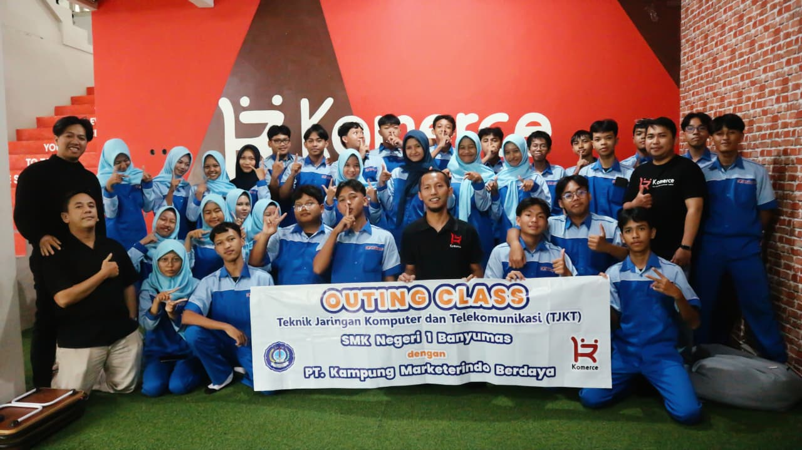

A LITTLE ARCHIVE OF US
The days we’ll
remember.
Kumpulan cerita, tawa, dan momen sederhana yang pernah kita lewati bersama. Disimpan di sini, supaya suatu hari nanti kita bisa mengingatnya lagi.
Jelajahi kenangan
COLLECTED MOMENTS · SHARED STORIES · OUR LITTLE HISTORY
Scroll a little, remember a lot.
THE MEMORY ARCHIVE
Every moment
has a story.
Tidak harus menjadi momen besar untuk layak dikenang. Beberapa hal sederhana justru paling dirindukan.
Tidak ada momen yang cocok. Coba kata kunci atau kategori lain.
A JOURNEY THROUGH TIME
Little moments,
big memories.
Setiap foto adalah potongan kecil dari perjalanan kita. Ini urutannya.
Menyiapkan timeline...
MORE THAN JUST PHOTOGRAPHS
We were here.
And it mattered.
Website ini dibuat sebagai ruang kecil untuk menyimpan hal-hal yang mungkin akan kita ceritakan kembali bertahun-tahun dari sekarang. Terima kasih sudah menjadi bagian dari ceritanya.
— our lives, our story.